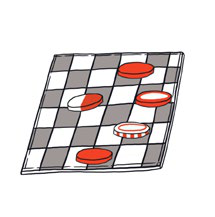
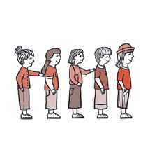
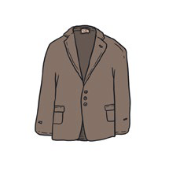

FYS
¿CUÁNTAS RECORDÁS?
En esta actividad, cada estudiante debe observar, recordar y recuperar una serie breve de palabras representadas mediante imágenes.
La educadora presenta cinco tarjetas con imágenes y nombra cada una.
Después de un tiempo breve de observación, retira las tarjetas y pregunta cuáles se recuerdan.
A medida que se nombran las palabras recordadas, la educadora vuelve a entregar las tarjetas correspondientes.
Luego se escriben en el cuadernillo los nombres de todas las imágenes.
Si se recuerdan pocas palabras, se pueden mostrar nuevamente las tarjetas o dar una pista relacionada con sus sonidos iniciales.
FICHA, FILA, SEIS, SACO, SAPO


